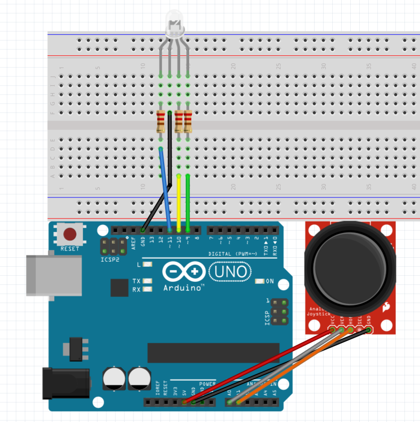
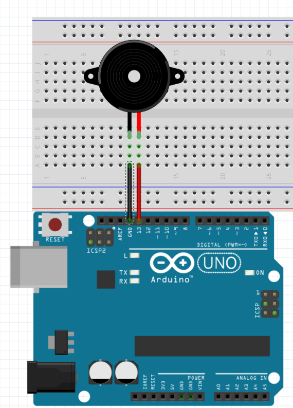
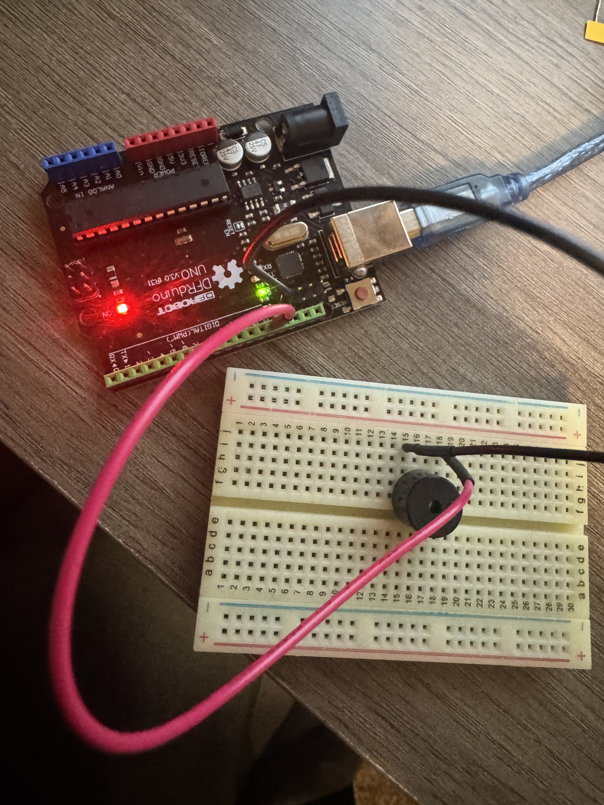
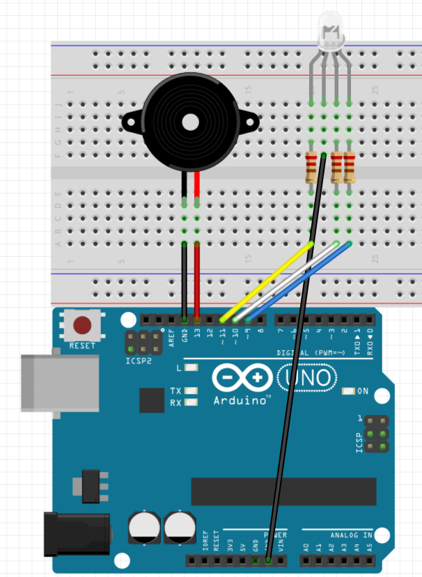
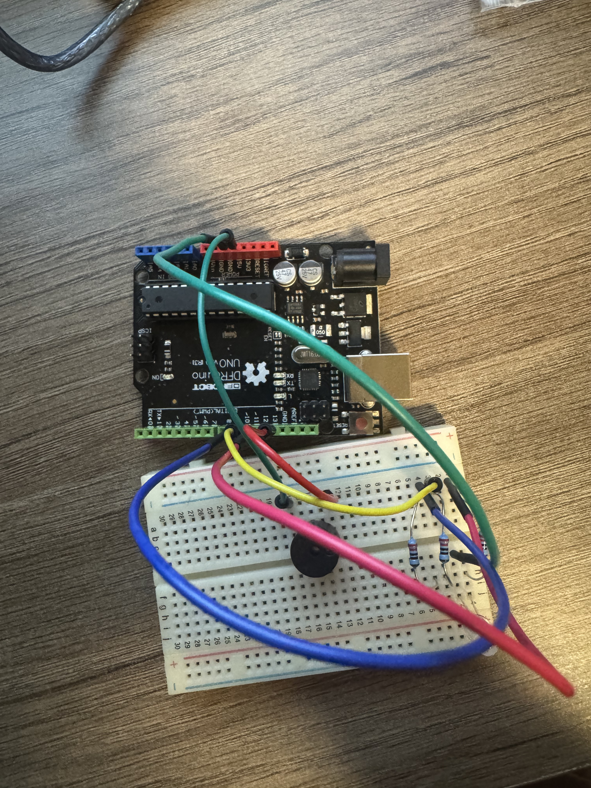

Picture

Video Demo
Code
const int X_pin = 0; // VRx connected to A0
const int Y_pin = 1; // VRy connected to A1
const int R_LED_PIN = 11;
const int G_LED_PIN = 10;
const int B_LED_PIN = 9;
void setup() {
pinMode(R_LED_PIN, OUTPUT);
pinMode(G_LED_PIN, OUTPUT);
pinMode(B_LED_PIN, OUTPUT);
}
void loop() {
int x = 0;
int y = 0;
x = analogRead(X_pin); //Read VRx normally
y = abs(1023-(analogRead(Y_pin))); //Invert VRy read, as the module is inverted
int redValue = 0;
int greenValue = 0;
int blueValue = 0;
int xValue = 0; //xValue is later reffered to as "douse," as it's main role is to douse the red and and blue LEDs
xValue = (map(y, 512, 1023, 0, 255)); //Douse is the upper half of the Y axis
xValue = constrain (xValue, 0, 255); //Set the upper half range to 0 thru 255
greenValue = (map(y, 0, 512, 0, 255)); //Set the green control to the lower half of the Y axis
redValue = (map(x, 0, 512, 0, 255))-xValue; //Set the red control to the left half of the X axis, then subtract the "Douse" value
blueValue = (map(x, 512, 1023, 255, 0))-xValue; //Set the blue control to the right half of the X axis, then subtract the "Douse" value
blueValue = constrain(blueValue, 0, 255); //Make sure the range of power for each output is 0 to 255
redValue = constrain(redValue, 0, 255);
greenValue = constrain(greenValue, 0, 255);
analogWrite(R_LED_PIN, redValue); //Make the lights turn on.
analogWrite(G_LED_PIN, blueValue);
analogWrite(B_LED_PIN, greenValue);
Serial.print("X-axis: "); //I'm letting this still execute, but nothing will display
Serial.println((x)); //until the Serial.begin(baud) is turned back on.
Serial.print("Y-axis: ");
Serial.println((y));
Serial.print("Red=");
Serial.println(redValue);
Serial.print("Blue=");
Serial.println(blueValue);
Serial.print("Green=");
Serial.println(greenValue);
Serial.print("Douse="); //Remember, "DOUSE" is the xValue and it's role is to turn off red and blue LEDs
Serial.println(xValue);
Serial.print("\n");
// delay(500); //Used in debugging so one can read the serial output. Keep off to keep LED control real-time
}Problems Faced and Notes
-
The joystick Y-axis on my module was inverted, so pushing up decreased the value instead of increasing it.
I corrected this by using:
This flipped the range so the physical motion matched the logical direction in code.y = abs(1023 - analogRead(Y_pin)); - Getting smooth color blending was tricky because I divided the joystick axes into halves (0-512 and 512-1023). If I didn't carefully map and constrain each section, negative values would occur after subtracting the xValue. This caused flickering or unexpected color jumps.
- The douse variable (xValue) was designed to reduce red and blue intensity when the joystick moves into the upper Y range. Without constraining the values after subtraction, the LED could receive invalid brightness levels. Using constrain() fixed this.
-
At first, colors looked incorrect because I accidentally swapped the analogWrite outputs.
I verified which PWM pin controlled which RGB leg and corrected the mapping:
Matching physical wiring to variable names was important.analogWrite(R_LED_PIN, redValue); analogWrite(G_LED_PIN, blueValue); analogWrite(B_LED_PIN, greenValue); - The joystick center position does not sit exactly at 512. Small variations caused slight color shifts even when the joystick was centered. Adding constrain() and carefully mapping ranges reduced noticeable jitter.
- Serial output was useful for debugging, but because Serial.begin() is currently commented out, nothing prints unless it is re-enabled. During debugging, I temporarily added a delay() so I could clearly read the values before removing it for real-time LED control.
Part 3 — Musical Notes with Passive Buzzer
Procedure
- Wired the passive buzzer to a digital pin(13) and GND.
- Uploaded a sketch that plays a single tone and beep at 1 second intervals.
- Recorded a video where the buzzer is clearly audible.
Schematic

Picture

Video Demos
Code PartA
const int BUZZER_PIN = 13;
#define NOTE_A4 440
#define NOTE_C2 65
void setup() {
pinMode(BUZZER_PIN, OUTPUT);
}
// This code will play continuous sound of frequency 260Hz (without stopping)
// NOTE THIS IS A DUMMY CODE (Make changes to make the buzzer beep at 1s intervals)
void loop() {
tone(BUZZER_PIN, NOTE_A4, 1000);
delay(1000); // Delay to make sure the beep plays for some time
noTone(BUZZER_PIN); // Stops the tone already being played
delay(1000); // Delay to make sure the beep plays for some time
}Code PartB (including pitches.h)
#include "pitches.h"
const int BUZZER_PIN = 13;
void setup() {
pinMode(BUZZER_PIN, OUTPUT);
}
// This code will play continuous sound of frequency 260Hz (without stopping)
// NOTE THIS IS A DUMMY CODE (Make changes to make the buzzer beep at 1s intervals)
void loop() {
tone(BUZZER_PIN, NOTE_DS6, 1000);
delay(1000); // Delay to make sure the beep plays for some time
noTone(BUZZER_PIN); // Stops the tone already being played
delay(1000); // Delay to make sure the beep plays for some time
}Problems Faced and Notes
- If the buzzer is silent, it is usually in the wrong pin, wrong buzzer type (active vs passive), or loose ground.
Part 4 — Melody with Passive Buzzer
Procedure
- Kept the same buzzer wiring from Part 3, buzzer to pin 13 and GND.
- Included pitches.h so I could use note names instead of guessing frequencies.
- Made note duration constants (full, half, quarter, etc.) so the rhythm is consistent.
- Wrote a Star Wars melody first using tone() and delay() and recorded a demo video.
- Then I wrote a public-domain melody (Twinkle Twinkle Little Star) using the same approach and recorded a second demo video.
Schematic
Picture
Video Demo (Star Wars)
Code (Star Wars Melody using pitches.h)
#include "pitches.h"
const int full_note = 2000; // Full note duration in ms
const int half_note = full_note / 2;
const int quarter_note = full_note / 4;
const int eighth_note = full_note / 8;
const int sixteenth_note = full_note / 16;
const int dotted_half_note = half_note / 2;
const int dotted_quarter_note = quarter_note * 1.5;
const int dotted_eighth_note = eighth_note * 1.5;
const int dotted_sixteenth_note = sixteenth_note * 1.5;
const int BUZZER_PIN = 13;
void setup() {
pinMode(BUZZER_PIN, OUTPUT);
}
void loop() {
tone(BUZZER_PIN, NOTE_A4, quarter_note);
delay(quarter_note * 1.2);
tone(BUZZER_PIN, NOTE_A4, quarter_note);
delay(quarter_note * 1.2);
tone(BUZZER_PIN, NOTE_A4, quarter_note);
delay(quarter_note * 1.2);
tone(BUZZER_PIN, NOTE_F4, dotted_eighth_note);
delay(dotted_eighth_note * 1.2);
tone(BUZZER_PIN, NOTE_C5, sixteenth_note);
delay(sixteenth_note * 1.2);
tone(BUZZER_PIN, NOTE_A4, quarter_note);
delay(quarter_note * 1.2);
tone(BUZZER_PIN, NOTE_F4, dotted_eighth_note);
delay(dotted_eighth_note * 1.2);
tone(BUZZER_PIN, NOTE_C5, sixteenth_note);
delay(sixteenth_note * 1.2);
tone(BUZZER_PIN, NOTE_A4, half_note);
delay(half_note * 1.2);
tone(BUZZER_PIN, NOTE_E5, quarter_note);
delay(quarter_note * 1.2);
tone(BUZZER_PIN, NOTE_E5, quarter_note);
delay(quarter_note * 1.2);
tone(BUZZER_PIN, NOTE_E5, quarter_note);
delay(quarter_note * 1.2);
tone(BUZZER_PIN, NOTE_F5, dotted_eighth_note);
delay(dotted_eighth_note * 1.2);
tone(BUZZER_PIN, NOTE_C5, sixteenth_note);
delay(sixteenth_note * 1.2);
tone(BUZZER_PIN, NOTE_A4, quarter_note);
delay(quarter_note * 1.2);
tone(BUZZER_PIN, NOTE_F4, dotted_eighth_note);
delay(dotted_eighth_note * 1.2);
tone(BUZZER_PIN, NOTE_C5, sixteenth_note);
delay(sixteenth_note * 1.2);
tone(BUZZER_PIN, NOTE_A4, half_note);
delay(half_note * 1.2);
noTone(BUZZER_PIN);
delay(1000);
}Video Demo (Twinkle Twinkle)
Code (Twinkle Twinkle Little Star using pitches.h)
#include "pitches.h"
const int full_note = 2000; // Full note duration in ms
const int half_note = full_note / 2;
const int quarter_note = full_note / 4;
const int eighth_note = full_note / 8;
const int sixteenth_note = full_note / 16;
const int dotted_half_note = (half_note * 3) / 2;
const int dotted_quarter_note = (quarter_note * 3) / 2;
const int dotted_eighth_note = (eighth_note * 3) / 2;
const int dotted_sixteenth_note = (sixteenth_note * 3) / 2;
const int BUZZER_PIN = 13;
void setup() {
pinMode(BUZZER_PIN, OUTPUT);
}
void loop() {
// Twinkle Twinkle Little Star
// C C G G A A G
tone(BUZZER_PIN, NOTE_C4, quarter_note);
delay(quarter_note * 1.2);
tone(BUZZER_PIN, NOTE_C4, quarter_note);
delay(quarter_note * 1.2);
tone(BUZZER_PIN, NOTE_G4, quarter_note);
delay(quarter_note * 1.2);
tone(BUZZER_PIN, NOTE_G4, quarter_note);
delay(quarter_note * 1.2);
tone(BUZZER_PIN, NOTE_A4, quarter_note);
delay(quarter_note * 1.2);
tone(BUZZER_PIN, NOTE_A4, quarter_note);
delay(quarter_note * 1.2);
tone(BUZZER_PIN, NOTE_G4, half_note);
delay(half_note * 1.2);
// F F E E D D C
tone(BUZZER_PIN, NOTE_F4, quarter_note);
delay(quarter_note * 1.2);
tone(BUZZER_PIN, NOTE_F4, quarter_note);
delay(quarter_note * 1.2);
tone(BUZZER_PIN, NOTE_E4, quarter_note);
delay(quarter_note * 1.2);
tone(BUZZER_PIN, NOTE_E4, quarter_note);
delay(quarter_note * 1.2);
tone(BUZZER_PIN, NOTE_D4, quarter_note);
delay(quarter_note * 1.2);
tone(BUZZER_PIN, NOTE_D4, quarter_note);
delay(quarter_note * 1.2);
tone(BUZZER_PIN, NOTE_C4, half_note);
delay(half_note * 1.2);
noTone(BUZZER_PIN);
delay(1200);
}Problems Faced and Notes
- At first the notes ran together and sounded messy, so I used a small pause multiplier (1.2x) after each note so you can hear separation.
- The dotted note durations were useful, but using decimal math can be weird in Arduino, so for my second version I used integer math (*3 / 2) for dotted notes.
- Using pitches.h made it way easier because I could use NOTE_C4, NOTE_G4, etc. instead of guessing frequencies.
- Sometimes the buzzer sounded quiet until I re-seated the jumper wires and made sure GND was solid.
- Keeping note durations as constants made it easy to adjust the tempo just by changing full_note.
Extra Volt
Procedure
- Kept the same buzzer wiring from Part 4 (pin 13 to GND).
- Kept the RGB LED wiring from Part 1 (pins 11, 10, 9 through resistors to GND).
- Combined the melody code with analogWrite() so each unique note turns on a specific color.
- Star Wars melody plays first with color mapping.
- Twinkle Twinkle plays second with its own color mapping.
- It works by assigning a unique RGB color value to each note played.
Schematic

Picture
